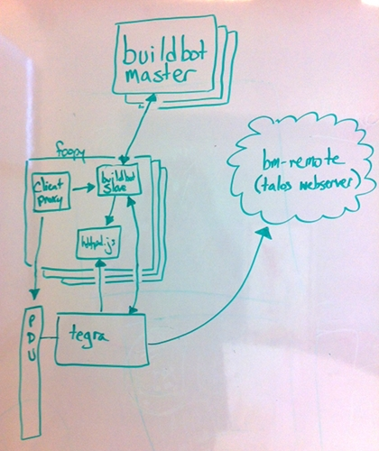

A brief overview of the Tegras now

-
Buildbot slave is tied (hardcoded) to a single Tegra.
-
Buildbot master assigns jobs immediately to any free buildslave, without knowing about Tegra status.
-
Clientproxy, external scripts, and buildbot factory try to prevent broken Tegras from staying in production by creating flag files and killing buildbot.
Killing buildbot doesn't seem to work properly atm.
-
Clientproxy and external scripts attempt to prevent hung Tegras by rebooting unresponsive Tegras, clearing flag files, and putting Tegras back to work.
This happens outside the buildbot process, in parallel, and can break running processes or bring broken Tegras back online.
-
This is all happening via multiple processes, multiple scripts, which don't know about each other, or provide easily parsable or searchable history.
-
Any sort of timing mismatch will result in a lot of tree breakage.
-
Foopies hardly ever reboot, so we have to look for errant processes or files lying around from previous jobs.
-
There is a lot of room for improvement within this model, but I believe this model has inherent design flaws.
device pool future -->